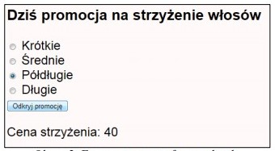

Utwórz stronę html o nazwie fryzura.html. Strona powinna posiadać następującą zawartość:

Wymagania dotyczące skryptu:
Napisany w języku wykonywanym po stronie przeglądarki
Uruchamia się po wciśnięciu przycisku na stronie fryzura.html
Podaje cenę strzyżenia w zależności od wyboru dokonanego przez pola radio zgodnie z cennikiem w tabeli
‒ Wyświetla wynik działania pod przyciskiem według wzoru: „Cena strzyżenia: wartosc gdzie wartość oznacza cenę
strzyżenia dla wskazanej długości włosów.
Długość włosów/ Cena
Krótkie 25 | Średnie 30 | Półdługie 40 | Długie 50
...